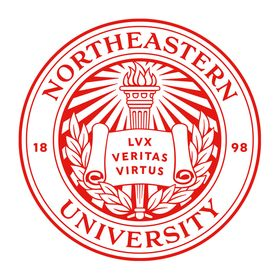
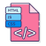

About Me
Education
- I am a 2nd year student at Northeastern University studying computer science. I'm not completely commited to a concentration yet, but it
will most likely be in Human Centered Computing.
- Relevant Coursework: Algorithms & Data | Object Oriented Design | Computer Systems | Fundamentals of Digital Design & Computer Organization | Mathematics of Data Models | Foundations of Cybersecurity


Skills
- Languages: Java | HTML/CSS | TypeScript | React.js | Python | C | SQL | Racket | x86/RISC-V Assembly




- Tools/Frameworks: VSCode | Vim | GitHub | Linux CLI | Jupyter Notebook | JUnit Testing | Ubuntu | Eclipse | Docker


Experience
I'm currently a software developer at Northeastern Electric Racing, an FSAE Organization that competes in Formula Electric
competitions on a yearly basis.
I've integrated crucial UI/UX changes to FinishLine, our team's full stack web application that streamlines work packages deadlines
and tasks for over 100+ group members.
In the past, I was part of the handling team, doing research work on braking materials and comparing past designs to current ideas, striving
for improvement.
Hobbies and Passions
-Automobiles. I absolutely love cars! Ever since reading my first car magazine from MotorTrend in 2010, I've been obsessed with anything related to cars ever since.
-Car Trivia
-Driving. I'll go for a night drive every now and then. You will most likely catch me in a...
-Hiking
-Cycling
-Guitar
-Video Games